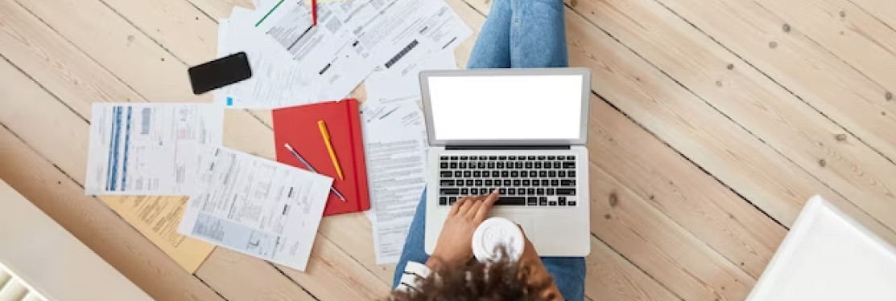

Financial Management Tips for Freelancers and Side Hustlers
As freelancing and side hustles become increasingly popular career options, it's essential for individuals in these roles to manage their finances effectively. Here are some financial management tips tailored specifically for freelancers and side hustlers:
Establish a detailed budget that accounts for both your personal and business expenses. Track your income and expenses regularly to ensure that you're staying within your budget and have a clear understanding of your financial situation.
Freelancers and side hustlers often experience fluctuating income, making it crucial to have emergency savings to cover unexpected expenses or periods of low income. Aim to set aside at least three to six months' worth of living expenses in an easily accessible savings account. Be proactive about invoicing your clients promptly and follow up on any overdue payments. Consider implementing automated invoicing systems or using invoicing software to streamline the process and ensure timely payments.
To mitigate the risk of relying solely on one source of income, diversify your income streams by taking on multiple freelance projects or exploring different side hustles. Having multiple income sources can provide stability and increase your earning potential. As a freelancer or side hustler, you're responsible for managing your own taxes, including income taxes, self-employment taxes, and potentially state and local taxes. Familiarize yourself with relevant tax laws, deductions, and credits, and consider working with a tax professional to optimize your tax strategy and minimize your tax liability.
Invest in your skills and expertise to remain competitive in your field and increase your earning potential. Allocate a portion of your income toward professional development activities such as online courses, workshops, or industry conferences.
Consider purchasing insurance policies such as health insurance, disability insurance, and liability insurance to protect yourself from unforeseen risks and expenses. Evaluate your insurance needs based on your specific circumstances and seek advice from insurance professionals if necessary. Maintain accurate and organized financial records, including income, expenses, receipts, contracts, and tax documents. Proper record-keeping not only helps you track your financial progress but also ensures compliance with tax and legal requirements.
Don't hesitate to seek guidance from financial professionals, such as financial advisors or accountants, who specialize in working with freelancers and self-employed individuals. They can provide personalized advice and help you develop a financial plan that aligns with your goals and circumstances.
By implementing these financial management tips, freelancers and side hustlers can build a solid foundation for financial stability, mitigate risks, and achieve long-term success in their independent careers.